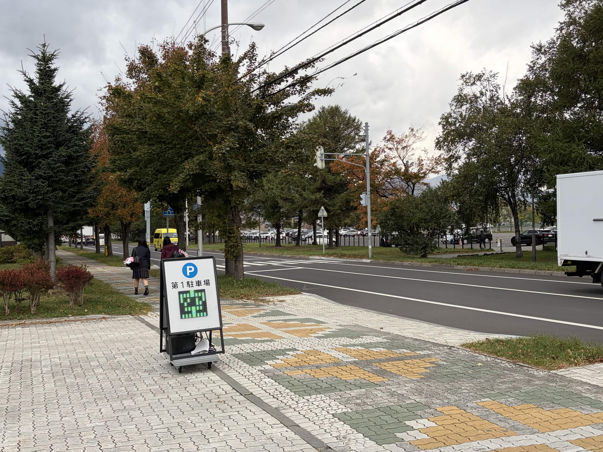
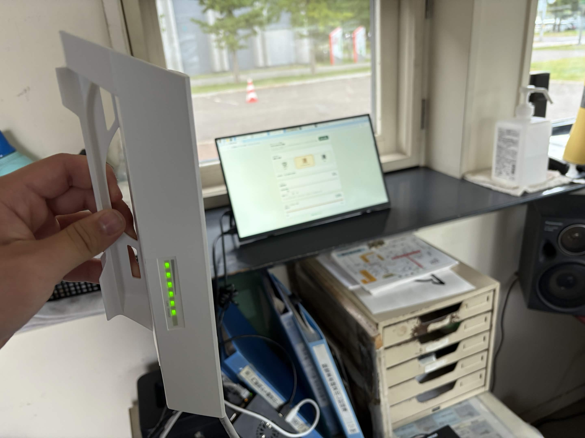
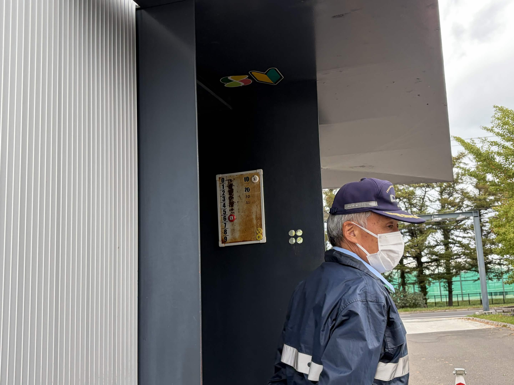
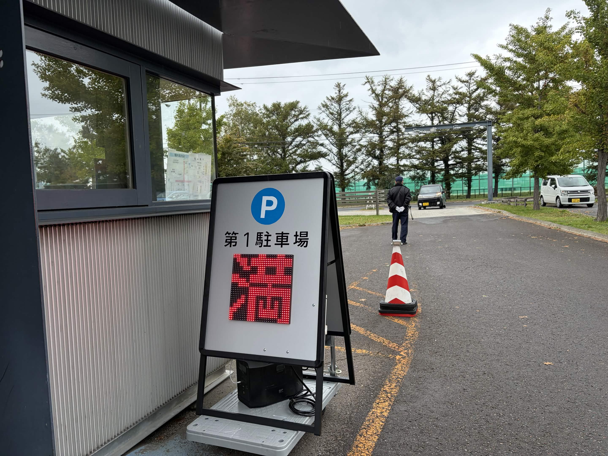
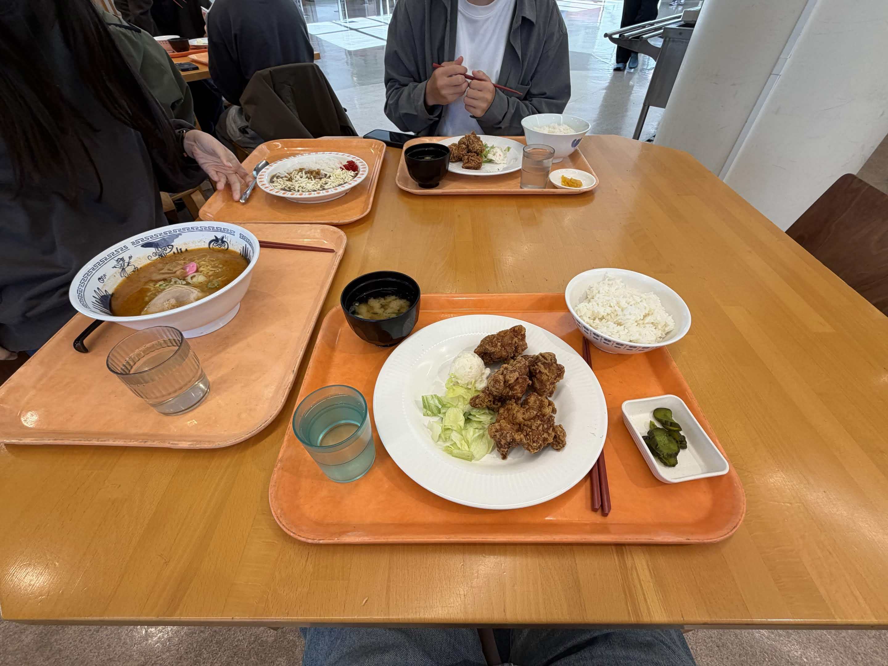
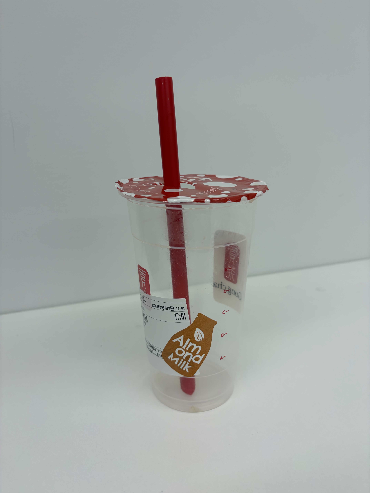

実証実験①
筆者:E
看板を駐車場に置いて、実際に使ってもらいながらアンケートも取る。昨日の夜まで準備していた実証実験、いよいよ本番です。寝不足だけど、遅刻はできない！
寝落ちからの実証実験
おはようございます（7時）。昨日3時に帰宅して、いろいろしていたら4時に床で寝落ち。7時に親に起こされました。まるで6堀大……おっと、この記事でその名前を出すのは良くないな……。
今日は実証実験で、警備員さんに朝行きますと伝えてあります。遅刻は許されない。
看板を設置して、実際にアンケートを実施するのが今日の目的。早く用意しないと間に合わないので、朝ごはんを食べる余裕はありません。親にもらったウィダーインゼリーのラムネ味を片手に、車に乗り込みました。
学校に着いたのは7時45分くらい。学食を奢る代わりに手伝いに来てもらったCさんが、ちょっと先に到着していました。ありがたい。
看板を定位置へ
作業部屋から看板と、昨日印刷したアンケート協力用紙（面白いデザイン）を持って警備員室へ。看板は台車に載せて運びました。
警備員室の方に挨拶して、看板を定位置に設置。これで実証実験スタートです！

CさんにはQRコードの用紙を持ってもらい、第1駐車場から出てきた人に声をかけてアンケートに答えてもらいます。視認性はバッチリだと思う。じゃあ、さっそくPi 5で看板を操作していきます。
……あれ？ 切り替わらない？
昨日やったときは切り替わったのに、なんでだ。IPアドレスが変わった？ 看板のESP32と俺のMacをつないでシリアルモニターを確認すると、見事にIPアドレスが変わっていました。
Pi 5側のIPアドレスを編集して、CPE210が苦手（？）とされていたガラス越しで実験。すると、わりかし遠距離なのにラグなく看板が書き変わりました！
成功したんだ！！

昨日は送受信方法を変更したあと、ガラス越しで実験していませんでした。ガラスが苦手というわけではなかったんだな。
自分たちで作った看板が光っているのを見て、結構感動しています。普通に自慢できるレベルだと思う。
ただ、今のところCPE210を手で持って看板の方に向けないと、正常に通信できません。後々設置できるようにすれば、持つ手間は省けるはず。
台数は手動で数えている
ここで、警備員さんが手動で台数管理をしている様子を見ました。
俺「これ、台数数えているんですか？」
警備員さん「そうです。」
俺「マグネットを移動させるんですね」
警備員さん「そうです。」
俺「この台数って正確なんですかね？」
警備員さん「満車に近くなったら別の警備員が自転車で巡回し、正確にカウントするんです。」
俺「なるほど。そのためのチャリだったのか。」

数学の大先生、I先生が車で来るのも見かけました。Civic Type Rに乗っていて、非常にカッコいい（大ヒントである）。せっかくなので、車から降りてきたところに声をかけて、アンケートのQRコードを見せました。
どうやらGoogleログインが必要だったらしく、手間をかけさせてしまった。申し訳ない。
残り台数を手動で更新
なんやかんやで残り台数が15台を切ったあたりから、HTML上で実際に台数調整をしてみました。今のところ、台数は手動で調節します。
これ結構大変。一人でCPE210を持ちながら、台数も変えなきゃいけない。
残り5台くらいになったころ、小雨が降ってきました。Cさんから電話がかかってきます。
C「雨降ってきたけど、看板大丈夫そう？」
俺「看板は大丈夫だと思う。逆にCさんは雨大丈夫？ 傘ないけど。」
C「ちょっとまずいかも」
俺「無理しないでね。無理だったら帰ってきてね」
こんな会話をしていました。でも内心、俺は看板が不安だった。初めての雨だもんね。
満車表示のあとに、もう1台
警備員さんが最後の1台を入れて、表示上は0台に。俺は看板を「満」に切り替えました。やっと終わりましたか〜と思い、Cさんと話していると……。

一台の車が入っていた。
俺は満車だと思い込んでいたけれど、その人の声を聞くと「1台空いている」と言っていました。SPACESを始めようと思ったきっかけと同じだな、と思った。それと同時に、警備員さんの大変さも分かりました。出ていく車は見えないんですよね。実際に、見えないと言っていました。
これをもって実証実験は終了。看板には水滴が付いていました。疲れて汗が滴っているようだった。（なんでちょっと文学的なんだよ）
Cさんに学食を奢る
作業部屋に戻って仮眠をとり、約束どおりCさんに昼飯（HITの学食）を奢りました。かなりお腹が空いていたようで、「2品頼んでいい？」と聞かれたので、もちろんOK。

なぜなら、奢る予定だった人がもう一人いたのに、2度寝して遅刻してきたからです。
手伝いに来てくれて、本当にありがとう。
疲労
このブログのほかに、10/9と10/15のブログも書いていました。txtに書きたいことをまとめて、それを今まで自分が書いた書き癖をcodexにまとめてもらって、AIで書いてもらっている。
関係ないが、俺は最近ゴンチャにハマっている。同じ学部の同じ開発メンバーの中の人にゴンチャを紹介されて以来、ハマっている。今日も飲みたくなって買いに行ってしまった。
ゴンチャ、気が利くねぇ！！

警備員室のWi-Fiをどうするか
次は警備員室でのWi-Fi環境をどうするかだよな。